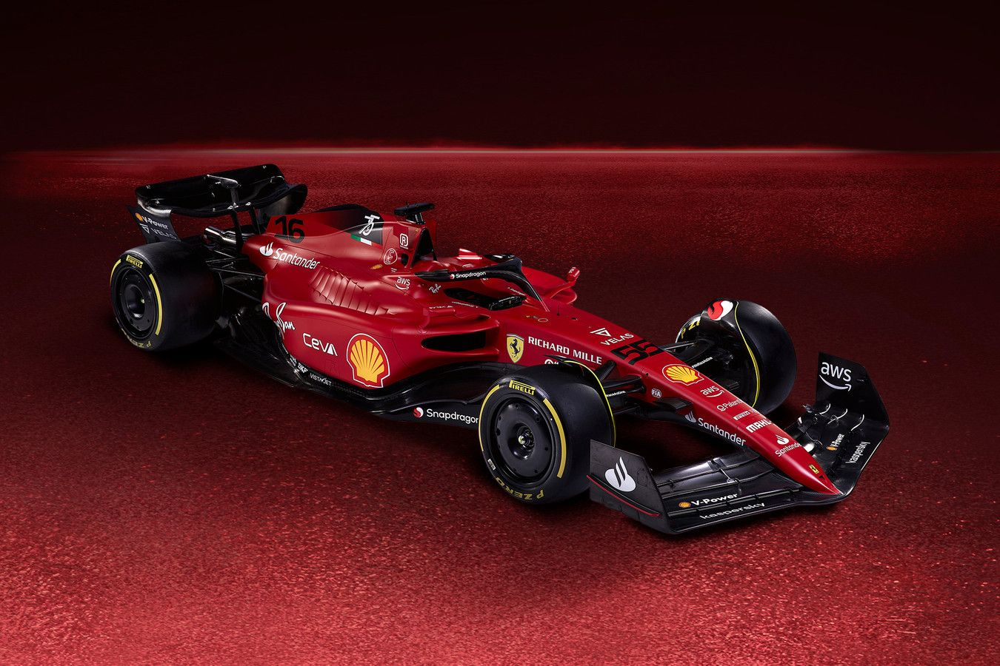

Ferrari F1-75
Unidad de potencia 066/7
- CILINDRADA 1600 cc
- RPM MÁXIMAS 15,000
- SOBREALIMENTACIÓN Turbocompresor único
- CAUDAL MÁXIMO DE COMBUSTIBLE 100 kg/h
- CONFIGURACIÓN 90° V6
- PERFORAR 80 milímetros
- GOLPE 53 milímetros
- VÁLVULAS 4 por cilindro
- INYECCIÓN DIRECTA máx. 500 bar
Sistema Ers
- CONFIGURACION: Sistema híbrido de recuperación de energía con motores eléctricos
- BATERIA: Baterías de iones de litio con un peso mínimo de 20 kg
- CAPACIDAD MÁXIMA DEL PAQUETE DE BATERÍAS 4 MJ
- POTENCIA MÁXIMA MGU-K 120 kW (163 cv)
- RPM MÁXIMAS MGU-K 50,000
- RPM MÁXIMAS MGU-H 125,000
Coche
- PESO TOTAL INCLUYENDO AGUA, LUBRICANTES Y CONDUCTOR: 795 KG
- CHASIS FABRICADO CON MATERIAL COMPUESTO DE NIDO DE ABEJA DE FIBRA DE CARBONO CON HALO PROTECTOR SOBRE LA CABINA
- CARROCERÍA Y ASIENTO EN FIBRA DE CARBONO
- DIFERENCIAL TRASERO CONTROLADO HIDRÁULICAMENTE
- DISCOS DE CARBONO AUTOVENTILADOS BREMBO (DELANTEROS Y TRASEROS) CON CONTROL FRENO POR CABLE PARA LOS FRENOS TRASEROS
- CAJA DE CAMBIOS LONGITUDINAL FERRARI CON 8 MARCHAS, MÁS MARCHA ATRÁS
- SUSPENSIÓN DELANTERA DE VARILLA DE EMPUJE
- SUSPENSIÓN TRASERA PULL-ROD
- RUEDAS DELANTERAS Y TRASERAS: 18"